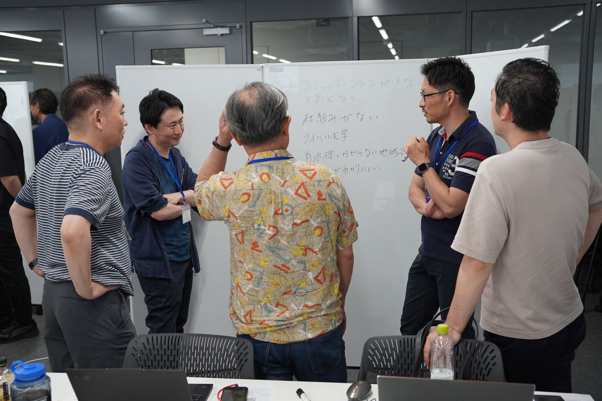
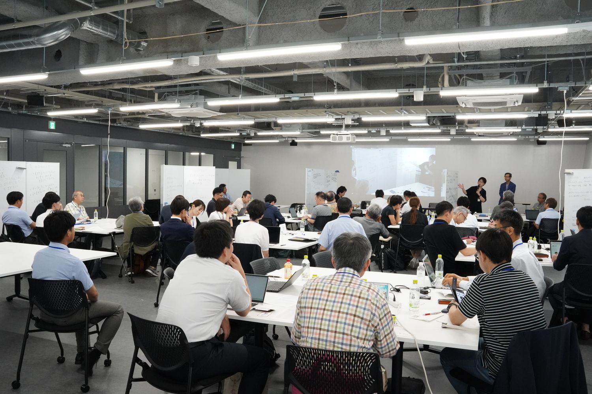
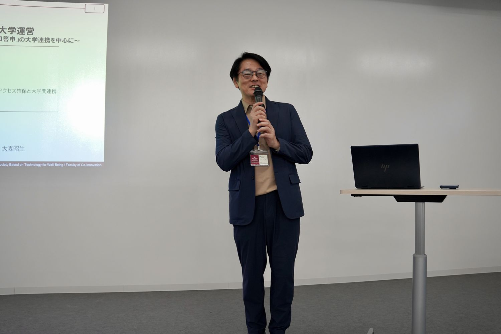
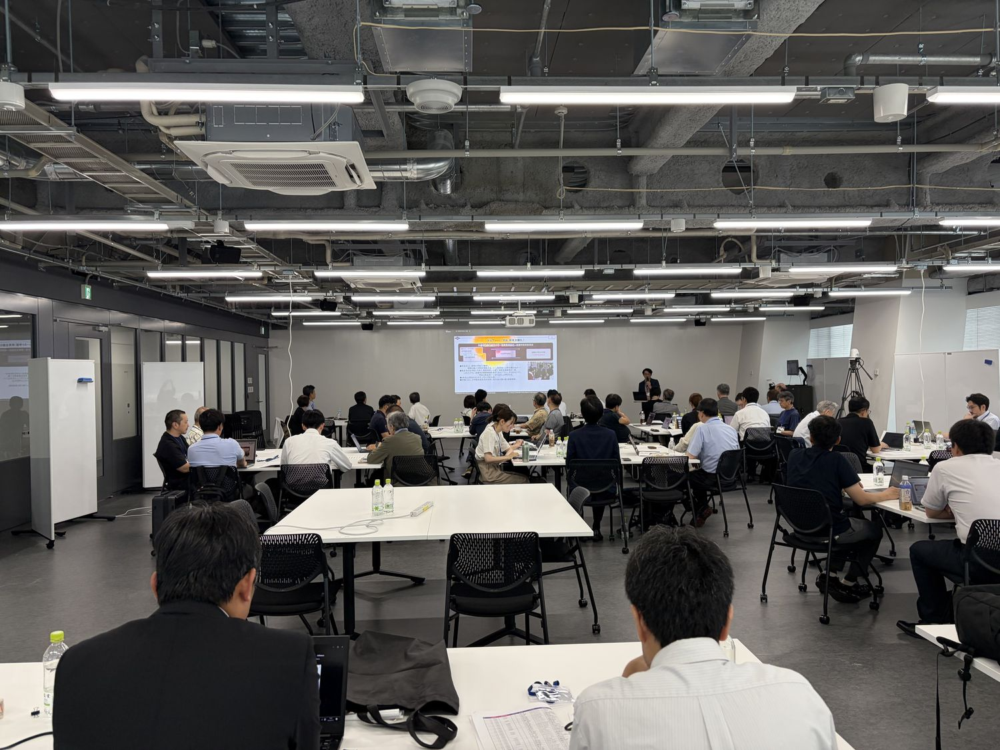
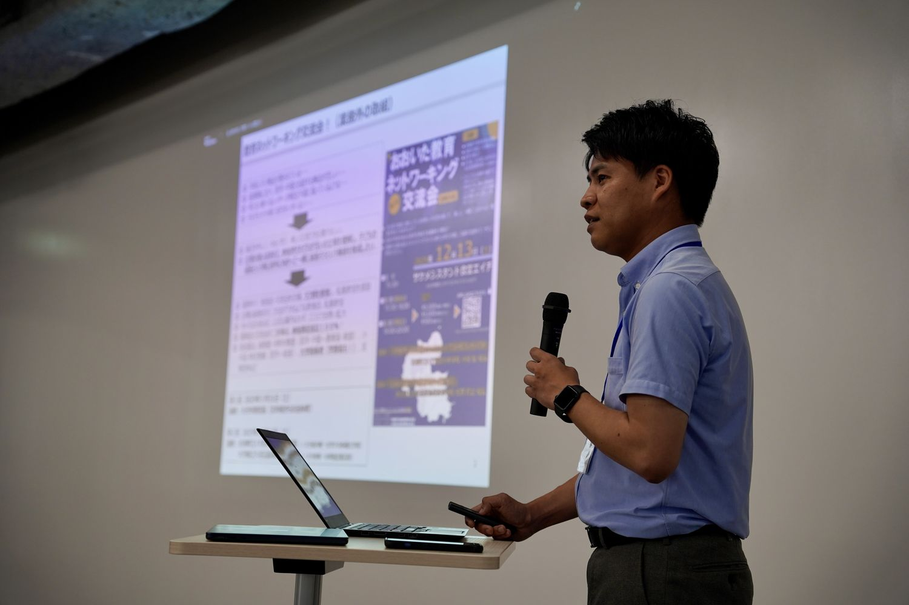
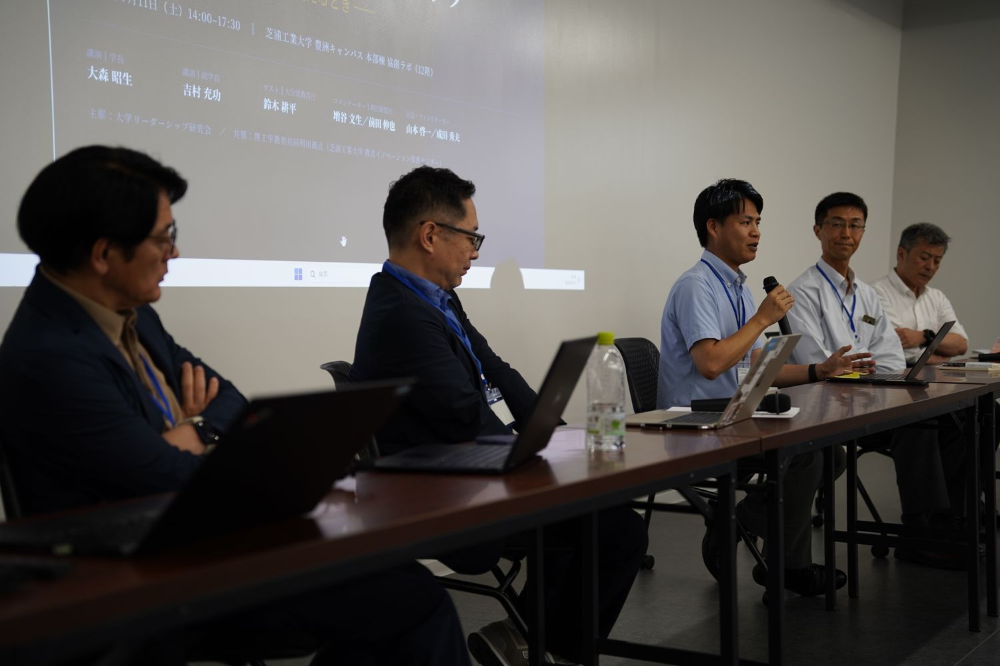
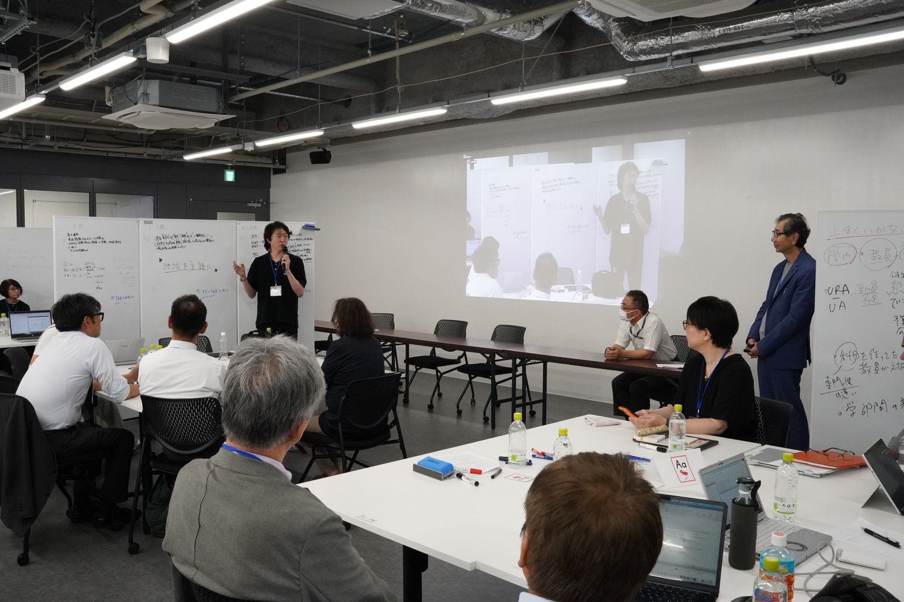

共創を作り出すリーダーシップ大学・高校・地域が主語を変えるとき
本研究会はこれまで、大学の内側で発揮されるリーダーシップ――学長のリーダーシップ、学部長等ミドルのリーダーシップ、そしてビジョンを現場へ届ける「翻訳」の機能――を主題に、7年にわたり議論を重ねてきました。第9回は、その視点を大学の外側へ広げます。大学間、地域、そして高校・行政との間で発揮されるリーダーシップ、「共創を作り出すリーダーシップ」がテーマです。
18歳人口の減少が進むなか、一つの大学が単独でできることには限りがあります。地域の産・学・官、そして高校とどう連携し、どのようにともに学びの場をつくっていくのか。今回は群馬県前橋市と大分県という二つの地域の実践に学びながら、高校教育行政の視点も交え、参加者一人ひとりが自分の大学・地域の文脈で「共創の一歩」を構想する場としました。



開催概要
| 日時 | 2026年7月11日（土） 14:00〜17:30 |
|---|---|
| 会場 | 芝浦工業大学 豊洲キャンパス 本部棟協創ラボ（12階） |
| 定員 | 60名 |
| 参加費 | 1,000円（資料代を含む） |
| 対象 | 教学マネジメントを担う大学教員・職員 |
| 主催 | 大学リーダーシップ研究会 |
| 共催 | 理工学教育共同利用拠点（芝浦工業大学 教育イノベーション推進センター） |
| 参加者 | 61名（一般参加51名／主催・事務局7名／登壇者3名） |
参加者数は、研究会が保有する第1〜9回の統合参加者データ（v13）にもとづく集計です。申込記録を基礎としているため、当日の実数とは若干の差がありえます。
登壇者とプログラム
- 講演大森 昭生共愛学園前橋国際大学 学長「共創コンセプトによる学びづくりと大学運営――3つの共創とポスト「知の総和答申」の大学連携」
- 講演吉村 充功日本文理大学 副学長「地域で若者を育てる共創プラットフォームをいかに構築するか――「おおいた地域連携プラットフォーム」（大分モデル）と副学長（ミドル）の役割」
- ゲスト講演鈴木 耕平大分県教育庁 参事監 兼 高校教育課長「高大連携への期待」
- ゲスト・コメンテーター増谷 文生・前田 伸也朝日新聞社「『崖っぷちの私立大学 偏差値で測れない価値をどう見抜くか』著者」
- 論点提示・パネルディスカッション成田 秀夫・山本 啓一日本文理大学 客員教授・北陸大学 経済経営学部 教授
- フロア・ディスカッション「自分の地域・大学で共創を始めるには」を語り合う
開催報告
以下は、当日の発言録をもとに、各登壇者の発言の要旨をまとめたものです。発言録は登壇者の確認を経ています。引用部分は発言録からの抜粋です。
開会挨拶と趣旨説明
榊原 暢久（芝浦工業大学 教育イノベーション推進センター）／山本 啓一（北陸大学）
共催の芝浦工業大学を代表して、榊原暢久先生から開会の挨拶をいただきました。同大学はFD・SDの教育関係共同利用拠点として3期11年目を迎え、年間30本ほどのプログラムをZoomで全国の教職員に開いていることが紹介されました。
続いて山本が趣旨を説明しました。18歳人口が減り、定員割れと赤字が広がるなかで、限られた入学者を奪い合う「競争」が全面化しています。地方で大学がなくなれば、その地域から高等教育へのアクセスも失われます。そこで今回は、大学・高校・地域がともに価値をつくる「共創」を取り上げました。ただし、共創は言葉としてはよくても、実現は容易ではありません。山本は、関係者の思惑がかみ合わない背景として、理念・規範・ルール・手続きの四つを挙げ、これらがそろわなければ複数の関係者による共創は生まれにくいという枠組みを示しました。
大学と地域、大学と高校、そういったステークホルダーの間で、コンペティションとしての競争ではなく、共に何か新しい価値を創造していくためには、どういう理念があればよいのか。
山本 啓一
理念、規範、ルール、そして政策決定の手続きといった、いろいろなレベルで要因が揃っていかないと、複数のステークホルダーの場での共創はなかなか生まれていかないのではないか
山本 啓一
講演1 大森 昭生
共愛学園前橋国際大学 学長「共創コンセプトによる学びづくりと大学運営」

大森学長は、共愛学園前橋国際大学が掲げる「一体」の考え方を、地域・教職員・学生の三つの面から紹介しました。「地学一体」では、半年間市役所で働く授業や、地元の公立小学校に学生が毎日「勤務」する取組など、地域の人々が学生を育てる授業が正課に組み込まれています。学生は地域か海外での学修を最低1〜2回経験しなければ卒業できません。かつて半分ほどだった県内就職の割合は、いまは7〜8割です。
「教職一体」では、教員・職員に加えてパートや委託の職員まで出席するスタッフ会議で、大学の方向性を議論しています。「学職一体」の例として、内部質保証の正式な手続きに学生アドバイザリー委員会を加え、財務諸表まで説明したうえで学生と議論していることが紹介されました。後半では、地域構想推進プラットフォーム事業や地域アクセス特例など、地域の大学がともに高等教育へのアクセスを確保するための制度の動向が報告されました。
「地学一体」というのは、大学と地域が、連携をもう一歩超えて一体となるということです。大学は、私たちで言えば前橋の一部でしかない。
大森 昭生
大学の方向性を決めるのは誰か一人ではない、共に大学を作っていくということをずっとやってきました。
大森 昭生
講演2 吉村 充功
日本文理大学 副学長「地域で若者を育てる共創プラットフォームをいかに構築するか」

吉村副学長は、ミドルの立場で約20年にわたり学内外の調整にあたってきた経験を報告しました。日本文理大学は約20年前に「人間力の育成」を教育理念に掲げ、2007年に人間力育成センターを設けました。外部から評価を受けたことで、人間力に懐疑的だった教員の理解も得られたといいます。2014年にCOC事業に単独で採択されると、吉村副学長は学長室に入ってトップと現場の調整を担い、「地域をキャンパスに」という学修の枠組みだけを示して、科目の中身は各学部学科に任せました。
2021年には、県内の高等教育機関、全18市町村、経済団体、金融機関、県庁など63機関による「おおいた地域連携プラットフォーム」が発足しました。大分県では4年制大学への進学者の4分の1が福岡に流出しています。吉村副学長はこうした数字を示して危機感を共有し、似た目的の組織の一本化を進めました。現在、県からプラットフォームに毎年2,000万円程度の資金が出され、県の長期総合計画には「県内大学の入学定員充足率100%」がKPIとして掲げられています。
自治体が抱えている課題を、我々は学生の成長に使わせていただきたい。お互いの論点をきちんと噛み合わせて、それでやるのだということをしっかり認識していただいて、協力関係ができたと思っています。
吉村 充功
共創をやるために、私はかなり学内の先生方と一緒に現場で汗をかきながら、成果をちゃんと見せる。これが大事だと思っています。地域や企業に信頼していただくことで、共創に入っていただきやすくなり
吉村 充功
ゲスト講演 鈴木 耕平
大分県教育庁 参事監 兼 高校教育課長「高大連携への期待」

鈴木課長は文部科学省から大分県教育委員会に出向しており、高校の側から大学に期待することを話されました。NEXTハイスクール構想のもとになったのは、2040年に事務職が余剰となり、エッセンシャルワーカーや理系人材が不足するという経済産業省の推計です。大分県では改革先導拠点の計画を県内の大学関係者と複数回協議して練り上げ、4校を申請して1校が採択されました。
地域の県立高校の状況も報告されました。大分市・別府市以外の高校では75%に欠員が生じています。それでも県はすべての高校を存続させる方針をとり、今年度から大分市・別府市以外の全高校に学校運営協議会を置き、大学関係者にも参画を求めています。県内出身で県内の大学を卒業した人の県内就職率は70%、県外出身者では14.2%です。鈴木課長は、大学の側からも提案がほしいと述べ、高校在学中の大学科目の先取り履修や、県内大学への進学に関わる入試上のインセンティブを例に挙げました。
「うちの大学だったらこれが提供できるよ」「うちの大学の施設を使えるんじゃないか」といった建設的なご意見をいただけたことです。まさにこれこそが共創なのかなと、今回の取り組みを通じて改めて感じたところです。
鈴木 耕平
大学にご負担をおかけしていると非常に感じています。むしろ大学からも、「こんなことを一緒にやったらどうか」「県教委にこれをやってほしい」といった、双方向のベクトルがあると、我々としても非常にありがたいと思っています。
鈴木 耕平
質疑応答
会場の参加者から、地域から求められるリカレント教育・リスキリング教育の進め方について質問がありました。吉村副学長は、プラットフォームで産業界のニーズを経営者層・中堅管理職・若手の層ごとに調べてプログラムをつくり、修了者を「共創士マイスター」として認証する仕組みを紹介しました。大森学長は、前橋で商工会議所に聞き取りをしたところ事業承継が最大の課題とわかり、次世代経営人材を育てるプログラムを続けていると答えました。
パネルディスカッション
司会：山本 啓一／登壇：大森 昭生・吉村 充功・鈴木 耕平／コメンテーター：増谷 文生・前田 伸也（朝日新聞社）

第2部では、講演者3名とコメンテーターの朝日新聞社・増谷文生氏、前田伸也氏が議論しました。両氏は6月に刊行された『崖っぷちの私立大学――偏差値で測れない価値をどう見抜くか』の著者です。前田氏は共愛学園前橋国際大学を訪ねた印象を語りました。増谷氏は、取材を始めた当初は地方の私立大学の淘汰もやむを得ないと考えていたが、各地を歩くうちに、なくなれば地域が立ち行かなくなる大学が数多くあると実感したと述べました。
続いて山本が、関係者のあいだの相互不信をどう乗り越えるかを問いました。鈴木課長は、相互不信の主な層は行政と学校現場であり、本音で話す場として、また小中学校の教員と大学教員が出会う場として、非公式の会を開いたと説明しました。大森学長は、ビジョンがあっても組織が同じ方向を向くとは限らないが、なければ向くことはないと述べ、非公式な場の大切さにも触れました。吉村副学長は、大学間や行政・企業とはビジョンの共有が難しいなかで、「学生のためになる」という言葉には誰も反対しないこと、実例を示すと相手が加わりやすくなることを挙げました。山本は、学生を主語に置けば関係者の話がかみ合い、相互不信に陥らずに済むのではないかとまとめました。
「学生のためになるよね、相手のためにもなるよね」という接点をつなぐ。落とし込み方は、教育のプロである教員が持っていますから、そこを落とし込みやすくするようにつなげていく。
吉村 充功
地域で大学が何をしていくかというときに、学生を主語にしていくということを真ん中に置くことによって、先ほど吉村先生が言われたように話が噛み合ってくる、相互不信に落ち込まずに済む。
山本 啓一
グループ・ディスカッションと全体シェア
ファシリテーター：成田 秀夫（日本文理大学）

参加者は立場ごとに分かれたテーブルで、ホワイトボードに書き出しながら三つの問いを議論しました。共創を進めるうえでの現状の課題、学生を主語にすると何が動き出すか、明日からできる一歩、の三つです。
学長のテーブルからは京都文教大学の森学長が報告しました。学内では、連携に対応できる教員に仕事が集まり、教育コーディネーターのような職員も少ないため取組が広がらないこと、学外では、事務局の負担の大きさや、県がプラットフォームを重視するかどうかで成否が分かれることが挙げられました。副学長のテーブルからも報告がありました。資格課程の多い大学では学生を主語にしにくいため、「地域を主語に」して大学にできることを考えてはどうかという提案がありました。あわせて、報告者の大学で始めた取組として、卒業生を大学の研究員として月10万円程度で雇い、週2日は地域企業の課題を研究し、残りの日はその企業で働く「学士研究員」が紹介されました。
最後に成田先生が、2018年に発起人4名で刊行した『今選ぶなら、地方小規模私立大学！』から研究会が始まった経緯を振り返りました。議論は地域連携にまで広がったが、理念とゴールという出発点にあらためて戻ってきた、と述べて会を締めくくりました。
県が「このプラットフォームは大事だ」と本気で思ってくださることがものすごく大事で、それがないと地域プラットフォームはうまくいかないのではないか。
森 学長（京都文教大学）によるテーブルの議論の紹介
地域を主語にできることは何かを考えると、いろいろなしがらみや枠も少し超えながらできるのかなと考えています。
副学長のテーブルからの報告
参加者アンケートから
「共創」を理念としてではなく、理念・規範・ルール・場や手続きといった具体的な仕組みとして捉え直した点への言及が中心です。パネルディスカッションと会場との質疑応答の評価が他の項目より低く、自由記述の指摘とも一致しています。
| 研究会全体の満足度 | 4.46 | |
|---|---|---|
| 講演1 大森 昭生 | 4.35 | |
| 講演2 吉村 充功 | 4.38 | |
| ゲスト講演 鈴木 耕平氏 | 4.42 | |
| パネルディスカッション | 3.81 | |
| グループ・ディスカッション | 3.96 | |
| 会場との質疑応答 | 3.62 | |
| 仕事との関連性・有用性 | 4.38 |
- 共創の視点について知ることができて、自分の視野が広がりました。（大学教員）
- これまで学生が主語であるのは共通認識として捉えていましたが、高校、地域も主語であることに理解が深まりました。（大学教員）
- 共創を大学が考えていく際、地域の実情や大学のポジションによって、大学本体も周辺組織も温度感（必要性）が異なる。（大学職員）
参加者アンケートの回答は26件（回答率42.6%）です。満足度は5段階で、数値が大きいほど高い評価を示します。
資料
- 配布資料参加者向けに共有しています（掲載準備中）
本研究会はJSPS科研費 基盤研究(C)「ダイナミックな教学マネジメント体制の構築〜ミドル教職員の育成と組織開発に向けて」（研究代表者：山本啓一）の助成を受けて開催しました。